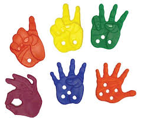
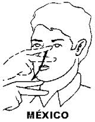
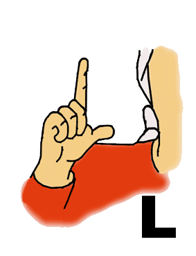

-

¿Qué son las señas?
La lengua de señas, o lengua de signos, es una lengua natural de expresión y configuración gesto-espacial y percepción visual (o incluso táctil por ciertas personas consordoceguera, gracias a la cual las personas sordas pueden establecer un canal de comunicación con su entorno social, ya sea conformado por otros individuos...
-

El estudio continuado del lenguaje signado es bastante reciente y ha permitido modificar la visión tradicional que lo concebía como lenguaje formado por gestos icónicos, poco estructurados y referidos sólo a realidades concretas, por una concepción más completa que afirma la gramaticalidad del lenguaje de signos y su posibilidad de expresión a cualquier nivel de abstracción.
-

Cabe destacar que la lengua de signos no es universal sino que existen diferentes lenguas de signos en unos países y en otros, e incluso dentro de un mismo país hay variedades dialectales. Existe un Sistema de Signos Internacional (SSI) o también conocido como gestuno. Se trata de una mezcla artificial de los signos de las diferentes lenguas que forman una nueva lengua estándar o internacional.
-

Podríamos decir que este sistema de signos o lengua de sordos internacional sería el equivalente (en intenciones) a la lengua oral del esperanto. Sin embargo, ni la una ni la otra han conseguido un buen desarrollo a causa de su artificialidad. Pero al igual que entre la comunidad de oyentes se ha impuesto el saber inglés como lenguaje internacional para facilitar los encuentros entre personas de diferentes nacionalidades, en el caso de los sordos la tendencia es la de utilizar prioritariamente la lengua de signos americana entre las personas que no comparten una lengua de signos común y necesitan comunicarse sin la intermediación de un intérprete.